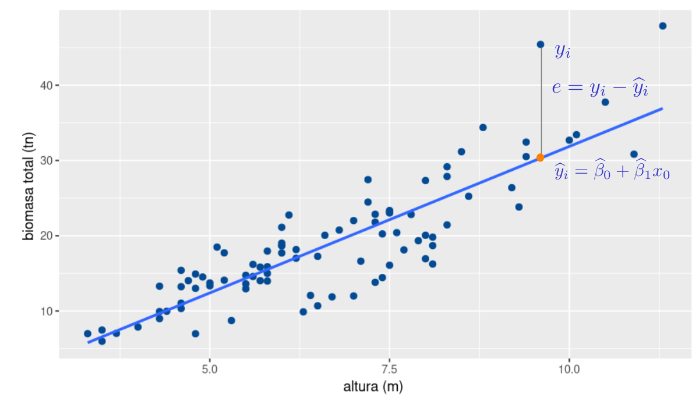

Modelo de Regresión Lineal Simple
Métodos y Simulación Estadística
¿Qué es el análisis de regresión?
El análisis de regresión es la búsqueda de una expresión matemçatica que permita predecir los valores de una variable a través del conocimiento de los valores de otra. La relación entre las dos variables puede ser representada mediante la línea recta de mejor ajuste a los datos. Esta línea se denomina recta de regresión o modelo de regresión simple.
Para este análisis se dispone de una muestra de \(n\) pares de observaciones de una variable \(Y\), que se llamaá variable dependiente, la cual debe estar correlacionada con otra variable \(X\), que se llamará variable independiente \((x_{1},y_{1}), (x_{2},y_{2}),(x_{3},y_{3}), ...,(x_{n},y_{n})\).
Ejemplos:
- Si una empresa gasta 10 millones al año en publicidad, ¿Cuánto podrían ser sus ingresos anuales por ventas?
- Si una persona tiene una estatura de 170 centímetros, ¿Cuánto podría ser su peso?
- Si una estudiante le dedica 30 horas al estudio del próximo examen de estadística, ¿Cuánto podría ser la calificación obtenida en dicha prueba?
- Para un futuro empresario que quiere vender 500 unidades de un producto, ¿Cuánto podría ser el precio esperado de cada unidad?
- ¿Cuántas computadoras se venderían al mes?, si un vendedor realiza 50 llamadas a diferentes empresas.
- Si el precio de un producto se aumenta un $2000, cuanto se espera se reduzca su demanda?
El establecimiento de la correlación entre las dos variables es importante, pero esto se considera un primer paso para predecir una variable a partir de la otra. Claro está, si sabe que la variable \(X\) está muy relacionada con \(Y\) , ello quiere decir que se puede predecir \(Y\) a partir de \(X\). Se está ya en el terreno de la predicción . (Evidentemente si, \(X\) no está correlacionada con \(Y\), la variable \(X\) no sirve como predictora de \(Y\)).
La ecuación de la recta de regresión
\[Y = \beta_{0} + \beta_{1} X + \varepsilon \] Donde :
- \(Y\) : variable dependiente o respuesta
- \(X\) : variable independiente o regresora, la cual se supone conocida
- \(\varepsilon\) : error, variable aleatoria desconocida y que representa todas aquellas variables que no estan en el modelo
- \(\beta_{0}\) : coeficiente a estimar, llamado intercepto
- \(\beta_{1}\) : coeficiente a estimar, llamado pendiente
\(\beta_{0}\) y \(\beta_{1}\) conforman los parámetros a estimar con conforman la recta:
\[\widehat{y_{i}} = \widehat{\beta}_{0} + \widehat{\beta}_{1} x_i\]
El objetivo principal se centra en :
- predecir el valor de la variable dependiente \(Y\) a partir de un valor de la variable independiente \(X\)
- estimar el valor de la pendiente \(\beta_{1}\), lo que permite valorar el efecto generado sobre la variable dependiente \(Y\), al realizar cambios en la variable independiente \(X\)
Ejemplo
Se requiere estimar la cantidad de biomasa contenida en un bosque, para lo cual se construye un modelo que permite estimar el valor de la biomasa para un árbol utilizando para ello el diámetro del árbol

Se observa en el diagrama que existe una relación positiva y fuerte entre las dos variables
Estimación de los parámetros
Método de Mínimos Cuadrados Ordinarios (MCO)
Este método se base en la selección de los dos valores que conformen la recta (intercepto y pendiente) que mejor se ajuste a los datos. Para ello debe dar solución a un sistema de ecuaciones, denominadas ecuaciones normales. A continuación se plantea como funciona el métodos

La diferencia entre el valor de \(y\) asociado con un valor de \(x_{0}\) y el valor estimado por la recta de regresión \(\widehat{y}_{0}\) se denomina resudual y constituye una muestra de la variable aleatoria \(\varepsilon\)
\[e_i = y_{i} -\widehat{y}_{i}\]
El método consiste en encontrar los valores de \(\beta_{0}\) y \(\beta_{1}\) que minimice la suma de los cuadrados de los residuales
\[SCE = \sum_{i=1}^{n} e_{i}^2 = \sum_{i=1}^{n} \big(y_{i} - \widehat{y}_{i}\big)^2 = \sum_{i=1}^{n} \big( y_{i} - \widehat{\beta}_{0} - \beta_{1} x_{i}\big)^2\]
El objetivo del método es:
\[\min SCE = \dfrac{\partial SCE}{\partial \beta_{0}} = 0\]
\[\min SCE = \dfrac{\partial SCE}{\partial \beta_{1}} = 0\]
\[\dfrac{\partial \hspace{.2cm} \sum_{i=1}^{n} \big( y_{i} - \widehat{\beta}_{0} - \beta_{1} x_{i}\big)^2}{\partial \beta_{0}} = -2 \sum(y_{i} - \beta_{0}- \beta_{1} x_{i}) = 0\]
\[\dfrac{\partial \hspace{.2cm} \sum_{i=1}^{n} \big( y_{i} - \widehat{\beta}_{0} - \beta_{1} x_{i}\big)^2}{\partial \beta_{1}} = -2 \sum(y_{i} - \beta_{0}- \beta_{1} x_{i}) x_{i} = 0\]
Constituyendo un sistema de dos ecuaciones y dos incognitas,
\[\sum_{i=1}^{n} y_{i} = n \widehat{\beta}_{0} + \widehat{\beta}_{1} \sum_{i=1}^{n} x_{i}\]
\[\sum_{i=1}^{n} y_{i} x_{i}= n \widehat{\beta}_{0} x_{i}+ \widehat{\beta}_{1} \sum_{i=1}^{n} x_{i}^{2}\]
Convirtiendose en el sistema :
\[ \begin{aligned} n \widehat{\beta}_{0} + \widehat{\beta}_{1} \sum_{i=1}^{n} x_{i} & = & \sum_{i=1}^{n} y_{i} \hspace{1cm}\text{(1)}\\ \widehat{\beta}_{0} \sum_{i=1}^{n} x_{i} + \widehat{\beta}_{1} \sum_{i=1}^{n} x_{i}^{2} & = & \sum_{i=1}^{n} y_{i} x_{i} \hspace{1cm}\text{(2)} \end{aligned} \]
De la ecuación \((1)\) se obtiene :
\[ \begin{aligned} \widehat\beta_{0} & = & \bar{y} - \widehat{\beta}_{1} \bar{x}\\ \end{aligned} \]
\[ \begin{aligned} \widehat\beta_{1} & = \dfrac{n \displaystyle\sum_{i=1} x_{i}y_{i} - \displaystyle\sum_{i=1}^{n} x_{i} \displaystyle\sum_{i=1}^{n} y_{i}}{n \displaystyle\sum_{i=1}^{n} x_{i}^{2} - \bigg(\displaystyle\sum_{i=1}^{n} x_{i}\bigg)^{2}} & \end{aligned} \]
Estimación de Máxima Verosimilitud
Este método optimiza la probabilidad asociada a una distribución de probabilidad, seleccionando los valores de \(\beta_{0}\) y \(\beta_{1}\) que hace tanga la mayor probabilidad.
Parte del supuesto :
Se tiene una muestra de tamaño \(n\)
Los valores la variable \(Y_{i}\) se ajusta al modelo \(Y_{i} = \beta_{0} + \beta_{1} X_{i} + \varepsilon_{i}\)
Los valores de \(\varepsilon_{i} \sim N( 0, \sigma^{2}\), e independientes
\(Y \sim N(\beta_{0}+ \beta_{1}X_{i}, \sigma_{\varepsilon}^{2})\)
Para cada valor fijo de \(x_{0}\) : \(E[Y|X_{i}=x_{0}] = \beta_{0}+\beta_{1}x_{0}\)
La función de \(Y\) cuando \(X = x_{i}\):
\[ f(y|_{X=x_{i}}) = \dfrac{1}{\sigma \sqrt{2 \pi}} \exp\Bigg\{ -\dfrac{1}{2\sigma_{\varepsilon}^2} \bigg( y-\beta_{0}-\beta_{1}x_{i}\bigg)^{2} \Bigg\} \]
Por tanto la función de distribución conjunta
\[ L(\beta_{0}, \beta_{1}, \sigma_{\varepsilon}) = \Pi_{i=1}^{n} \Bigg( \dfrac{1}{\sigma_{\varepsilon}\sqrt{2\pi}} \Bigg)^n \exp\Bigg\{-\dfrac{1}{2} \displaystyle\sum_{i=1}^{n} \Bigg(\dfrac{y_{i}-(\beta_{0}-\beta_{1}x_{i})}{\sigma_{\varepsilon}}\Bigg)^{2} \Bigg\} \]
Para encontrar los valores de \(\beta_{0}\) y \(\beta_{1}\) que maximizan \(L(\beta_{0}, \beta_{1}, \sigma_{\varepsilon})\), se utiliza la derivada parcial del \(\log (L(\beta_{0}, \beta_{1}, \sigma_{\varepsilon}))\)
\[ \log \big(L(\beta_{0}, \beta_{1}, \sigma_{\varepsilon})\big) = -n \hspace{.2cm} \log(\sigma_{\varepsilon}) - n \log(\sqrt{2\pi}) - \dfrac{1}{2 \sigma_{\varepsilon}} \sum_{i=1}^{n} \big(y_{i}- \beta_{0}-\beta_{1}x_{i}\big)^{2} \]
Al derivar la función e igualarlo a cero tenemos
\[ \begin{aligned} \dfrac{\partial}{\partial \beta_{0}} \log (L) &=& \dfrac{1}{\sigma_{\varepsilon}} \sum_{i=1}^{n} (y_{i} - \beta_{0} - \beta_{1} x_{i}) \hspace{.2cm} = 0 \hspace{.5cm}\text{(3)} \end{aligned} \]
\[ \begin{aligned} \dfrac{\partial}{\partial \beta_{1}} \log (L) &=& \dfrac{1}{\sigma_{\varepsilon}} \sum_{i=1}^{n} (y_{i} - \beta_{0} - \beta_{1} x_{i}) x_{i} = 0 \hspace{.5cm}\text{(4)} \end{aligned} \]
Que conincide con las ecuaciones normales \((1)\) y \((2)\) .
En conclusión la solución obtenida por el método de mínimos cuadrados y la obtenida por el método de máxima verosimilitud son iguales
Coeficiente de determinación
Después de realizar la estimación de \(MCO\) se requiere un indicador que permita medir el ajuste del modelo para con los datos. El coeficiente de determinación \(R^2\). Este indicador varia entre 0 y 1. Se desea que el modelo presenta un buen nivel de ajuste. En caso de tener varios modelos, el que presente el mayor valor, será el que mejor se ajuste a los datos.
\[R^{2} = \dfrac{\displaystyle\sum_{i=1}^{n} (\widehat{y}_{i}-\bar{y})^{2}}{\displaystyle\sum_{i=1}^{n} (y_{i}-\bar{y})^{2}}\]
Para que \(R^2\) sirva de indicador de comparación entre modelos, los modelos deben tener la misma variable dependiente. En estos casos se utiliza el \(R^2_{ajd}\)
\[ R^2_{ajd} = 1 - \Bigg[\dfrac{n-1}{n-k-1} \Bigg] \Big(1-R^2 \Big) \] Ajustado por el número de variables independientes \(k\) y el tamaño de la muestra \(n\)
Supuestos del modelo
El método MCO, es un método matemático que tiene solución única, sin embargo, si se desea realizar inferencia estadística como intervalos de confianzay pruebas de hipótesis es necesario validar los siguientes supuestos:
- Normalidad, los errores siguen una distribución normal (\(\varepsilon_{i} \sim N(0, \sigma^2)\))
- Homoscedasticidad, la varianza al rededor de la linea de regresión, para cualquier valor constante (\(V[\varepsilon] = \sigma^2\))
- Linealidad, la relación entre la variable dependiente y las variables independientes y el error es lineal. Es decir que las variables pueden tener cualquier forma pero los parametros deben garantizar una relacion lineal (\(y_{i}= \beta_{0}+ \beta_{1} x_{i} + \varepsilon_{i}\))
- No autocorrelación, los errores que corresponden a diferentes individuos o difente tiempo deben ser independintes unos de otros (\(Cov[\varepsilon_{i}, \varepsilon_{j}] = 0\))
- Outliers, aunque no es un supuesto formal, se espera que la data no contenga datos atípicos que generen sesgos en los estimadores de los coeficientes
Transformación de variables
En algunos casos el modelo lineal no es apropiado para ajutar los datos y por tanto no cumple los supuestos sobre los errores. Es necesario entonces probar otro tipo de modelo transformando las variables.
Dentro de las transformaciones más empleadas estan:
| Modelo | Regresión | Variable dependiente | Variable independiente | Interpretación de \(\beta_{1}\) |
|---|---|---|---|---|
Lin-Lin |
\(Y_{i} = \beta_{0}+ \beta_{1} X_{i} + \varepsilon_{i}\) | \(Y\) | \(X\) | \(\Delta Y = \beta_{1} \Delta X\) |
Lin-Log |
\(Y_{i} = \beta_{0}+ \beta_{1} \log(X_{i}) + \varepsilon_{i}\) | \(Y\) | \(\log(X)\) | \(\Delta Y = \Bigg(\dfrac{\beta_{1}}{100}\Bigg) \% \Delta X\) |
Log-Lin |
\(\log(Y_{i}) = \beta_{0}+ \beta_{1} X_{i} + \varepsilon_{i}\) | \(\log(Y)\) | \(X\) | \(\%\Delta Y = (100 \beta_{1}) \Delta X\) |
Log-Log |
\(\log(Y_{i}) = \beta_{0}+ \beta_{1} \log(X_{i}) + \varepsilon_{i}\) | \(\log(Y)\) | \(\log(X)\) | \(\%\Delta Y = \beta_{1}\% \Delta X\) |
Código R
A continuación se presenta el código en R para estimar el modelo y validar los supuestos más importantes
Estimación MCO
library(paqueteMET)
data(biomasa)
modelo=lm(bio_total ~ diametro, data=biomasa)
summary(modelo)Los resultados se presentan en cuartro partes :
Formula del modelo
\[\widehat{\text{bio_total}_{i}} = \widehat{\beta}_{0} + \widehat{\beta}_{1} \hspace{.2cm}\text{diametro}_{i}\]
Call: lm(formula = log(bio_total) ~ diametro, data = biomasa)
Estadística de los residuales
Residuals:
Min 1Q Median 3Q Max
-6.3775 -2.6594 0.0237 1.8758 11.9876
Coeficientes estimados
Coefficients:
Estimate Std. Error t value Pr(>|t|)
(Intercept) -9.0203 1.4129 -6.384 7.86e-09 ***
diametro 5.1026 0.2508 20.346 < 2e-16 ***
---
Signif. codes: 0 ‘***’ 0.001 ‘**’ 0.01 ‘*’ 0.05 ‘.’ 0.1 ‘ ’ 1
\[\widehat{\text{bio_total}_{i}} = -9.0203 + 5.1026 \hspace{.2cm} \text{diametro}_{i}\] Además se presentan los resultados de las pruebas de hipótesis individuales sobre los coeficientes:

Indicadores de ajuste
Residual standard error: 3.435 on 88 degrees of freedom Multiple R-squared: 0.8247, Adjusted R-squared: 0.8227 F-statistic: 414 on 1 and 88 DF, p-value: < 2.2e-16
Este resultado muestra el valor del coeficiente de determinación (\(R^2\)) que corresponde al porcentaje de la variabilidad de \(Y\) explicada por el modelo. Para el ejemplo \(R^{2} = 0.8227\). indicando que el modelo explica un 82.27% de la variación de \(Y\).
Validación de supuestos
Normalidad
\(H_o: \varepsilon \sim Normal\)
\(H_a: \varepsilon \hspace{.2cm} \text{ no } \sim Normal\)
Test de Shapiro - Wilk
shapiro.test(modelo$residuals)
Shapiro-Wilk normality test
data: modelo$residuals
W = 0.98394, p-value = 0.3338Test de Jarque-Bera
# install.packages("normtets")
library(normtest)
normtest::jb.norm.test(modelo$residuals)
Jarque-Bera test for normality
data: modelo$residuals
JB = 2.081, p-value = 0.253Test de Anderson-Darling
# install.packages("nortets")
library(nortest)
ad.test(modelo$residuals)
Anderson-Darling normality test
data: modelo$residuals
A = 0.29771, p-value = 0.5818Test de Lilliefors (Kolmogorov-Smirnov)
lillie.test(modelo$residuals)
Lilliefors (Kolmogorov-Smirnov) normality test
data: modelo$residuals
D = 0.0623, p-value = 0.5281Varianza contante
\(Ho : V[\varepsilon_{i}] = \sigma^2\)
\(Ha : V[\varepsilon_{i}] \neq \sigma^2\)
Test de Breusch-Pagan
library(lmtest)
bptest(modelo)
studentized Breusch-Pagan test
data: modelo
BP = 3.879, df = 1, p-value = 0.04889Test de Goldfeld-Quandt
library(lmtest)
gqtest(modelo)
Goldfeld-Quandt test
data: modelo
GQ = 1.1538, df1 = 43, df2 = 43, p-value = 0.3206
alternative hypothesis: variance increases from segment 1 to 2No autocorrelación de errores
\(Ho : E[\varepsilon_{i}, \varepsilon_{j}] = 0\)
\(Ha : E[\varepsilon_{i}, \varepsilon_{j}] \neq 0\)
Test de Durbin-Watson
dwtest(modelo)
Durbin-Watson test
data: modelo
DW = 0.67803, p-value = 1.716e-13
alternative hypothesis: true autocorrelation is greater than 0Transformación de variables
library(paqueteMET)
data("biomasa")
modelo1=lm(bio_total ~ diametro, data=biomasa) # Lin - Lin
modelo2=lm(bio_total ~ log(diametro), data=biomasa) # Lin - Log
modelo3=lm(log(bio_total) ~ diametro, data=biomasa) # Log - Lin
modelo4=lm(log(bio_total) ~ log(diametro), data=biomasa) # Log - Loglibrary(stargazer)
stargazer(modelo1, modelo2, modelo3, modelo4, type="text", df=FALSE)
===============================================================
Dependent variable:
-------------------------------------------
bio_total log(bio_total)
(1) (2) (3) (4)
---------------------------------------------------------------
diametro 5.103*** 0.278***
(0.251) (0.011)
log(diametro) 23.369*** 1.344***
(1.564) (0.058)
Constant -9.020*** -19.909*** 1.328*** 0.618***
(1.413) (2.629) (0.060) (0.098)
---------------------------------------------------------------
Observations 90 90 90 90
R2 0.825 0.717 0.887 0.858
Adjusted R2 0.823 0.714 0.885 0.857
Residual Std. Error 3.435 4.362 0.145 0.162
F Statistic 413.961*** 223.224*** 687.562*** 532.232***
===============================================================
Note: *p<0.1; **p<0.05; ***p<0.01